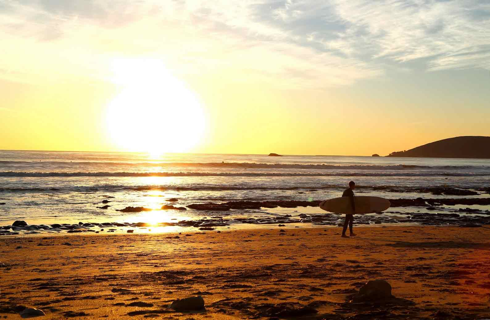

This site is a tool used by surfers new to the area who are looking to gain knowledge about shredding the central coast (predominantly Morro Bay and Cayucos). It provides the inside scoop to all the local spots, good swell direction, sensitivity to wind, and much much more. We would also love to hear your thoughts and comments or any input on a spot mentioned in this site. Please use our contact page if you wish to do so.

What defines the central coast and what areas should one look to surf if they find themselves there? The Central coast by many, is defined as the area north of Pismo and South of Cambria. This website will help those looking to gain knowledge about the surf spots on the central coast.